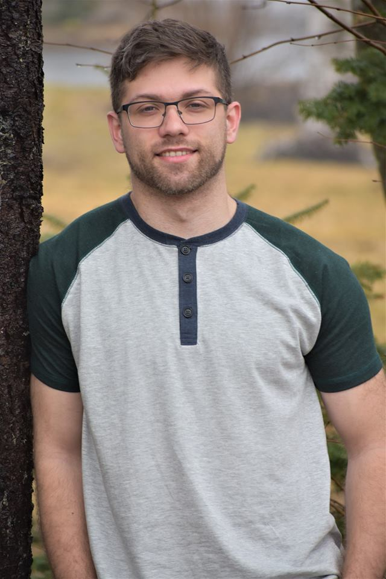

About Me

Hello, my name is Kohdy Nicholson. I was born and raised in a small province called New Brunswick
on the east coast of Canada. The header of this website showcases one of the most well-known
attractions of New Brunswick, known as the Hopewell Rocks located along the Fundy Bay!
I lived in New Brunswick for most of my life, however recently made the big move to Europe.
Copenhagen, the capital of Denmark, happened to be my landing spot when making this decision.
The reason I chose Copenhagen was because of an opportunity to work as a Build Engineering and
Support Associate for an exceptional company named Milestone Systems. This internship was obtained
through an organization called IAESTE.
My motivation for moving to Europe began back in 2018 when I lived in Ottawa, Canada. My
roommates were from Germany, and worked at the German embassy. Because Ottawa is the capital
city of Canada, all of the European embassies are located there. Therefore, a lot of the interns
who work at the european embassies in Ottawa plan social events amongst each other. My
roommates would often go to these events, and soon after would start inviting me as well.
I would eventually start going with them, which introduced me to a lot of different European
culture. It was at that time, when I made the decision to start looking for work opportunities
in Europe. My original plan was to find work in Berlin, Germany. However, I kept my options open
and ended up here in the beautiful city of Copenhagen!
School
New Brunswick Community College - 2011 to 2013
Before attending the University of New Brunswick, I completed a diploma program at the
New Brunswick Community College (NBCC) in Civil Engineering Technology. This program was primarily
focused on Computer Aided Design for Residential/Commercial buildings. My specialization was centered around
the building systems, such as plumbing, electrical and HVAC. The choice to go to NBCC after highschool was a
key factor into how I ended up in Computer Science, as I will explain further below in my work history. Keep
reading!
University of New Brunswick - 2015 to Present
I am currently finishing my Bachelors Degree of Computer Science. I have one semester left at the
University of New Brunswick (UNB). I chose to switch from doing a degree in Software Engineering to Computer
Science as it gave me more flexibility with my technical electives, allowing me to focus on classes
related to software rather than hardware. One of the greatest benefits of going to UNB was the co-op
program offered by the Computer Science faculty. I was able to gain valuable work experience through
this program, and made some lifetime friends along the way.
Work
Stantec Limited - 2013 to 2015
After graduating NBCC in 2013, I was offered a job by an multinational engineering firm by the name of Stantec.
I was hired as a Mechanical Engineering Technologist, and my primary responsbility was drafting process piping
and HVAC plans using AutoCAD. This was my first professional job, and it was an amazing learning experience.
However, my passion in my work produced was missing. Therefore, I began learning how to program for fun. As I
worked through small executable programs in C and C++, I was having A LOT of fun! Because of this,
it drove me to my next big life decision, which was to go to university for Software Engineering.
Telegraph-Journal - 2016
My first work place attachment was at a company called Telegraph-Journal in Saint John, New
Brunswick. This company is owned by Irving Limited, the largest New Brunswick employer. My time here
was spent getting accustomed to programming in Javascript, as well as in an industry setting. I
had a wonderful time working with my team, and I enjoyed working on projects that felt meaningful. Most
of my work revolved around programming in Javascript. This was mostly server side Javascript, so the
experience I gained here was mostly utilizing Nodejs. I spent four months at work, and finally had to
return to Fredericton to continue my studies.
Introhive - 2017
My second work attachment was spent working as a Ruby on Rails developer for a start-up in the city of
Fredericton, New Brunswick. This was my first work attachment that taught me how to work with a legitimate
industry level software development framework, Ruby on Rails. On top of this, I was tasked with working with
improving database query performance in older areas of the code base. I really enjoyed working with the
team, and also the start-up culture. My boss told me before I started, the motto they live by is "Work hard,
play hard". I can say with certainty that is exactly what we did! I worked here for four months, until
I went back to school to continue my studies.
Statistics Canada - 2018
Two more semesters of school were completed before I began my third work attachment at Statistics Canada
with the Federal Government of Canada.